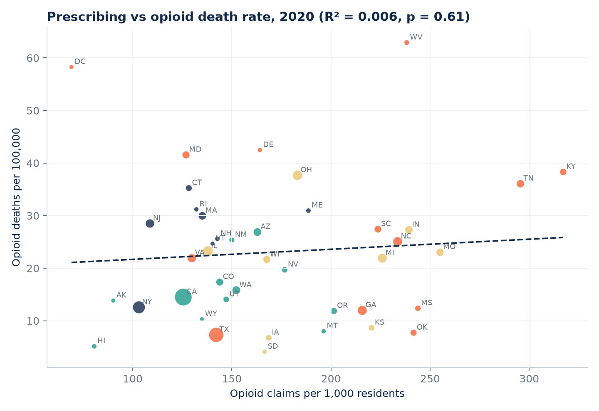
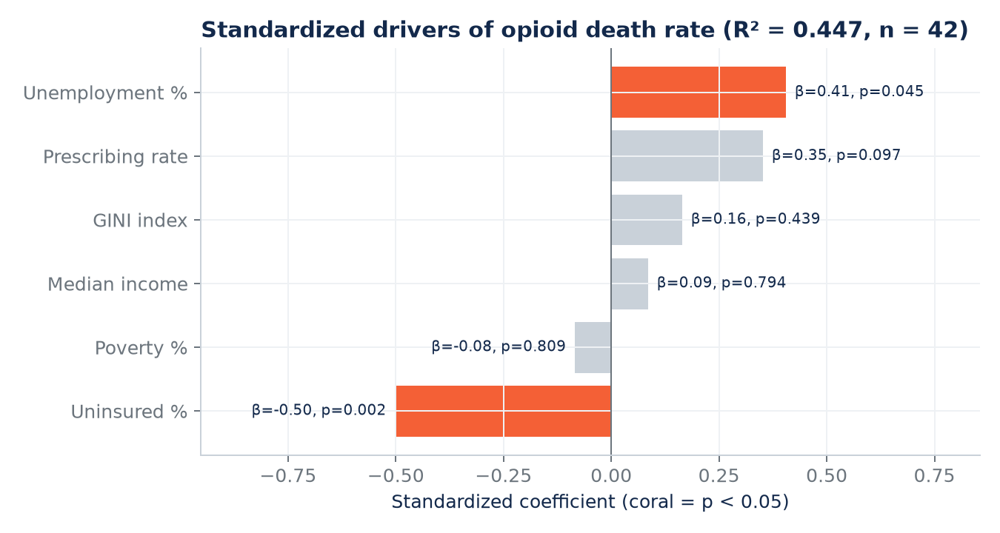
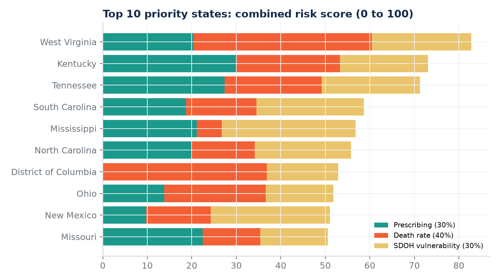
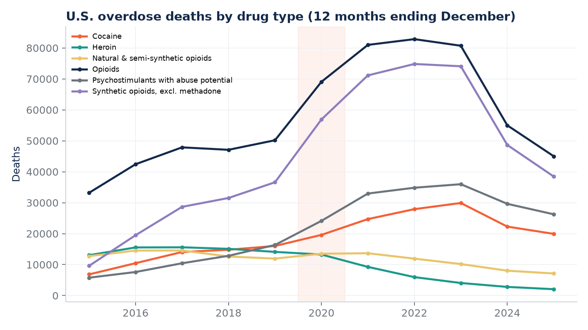
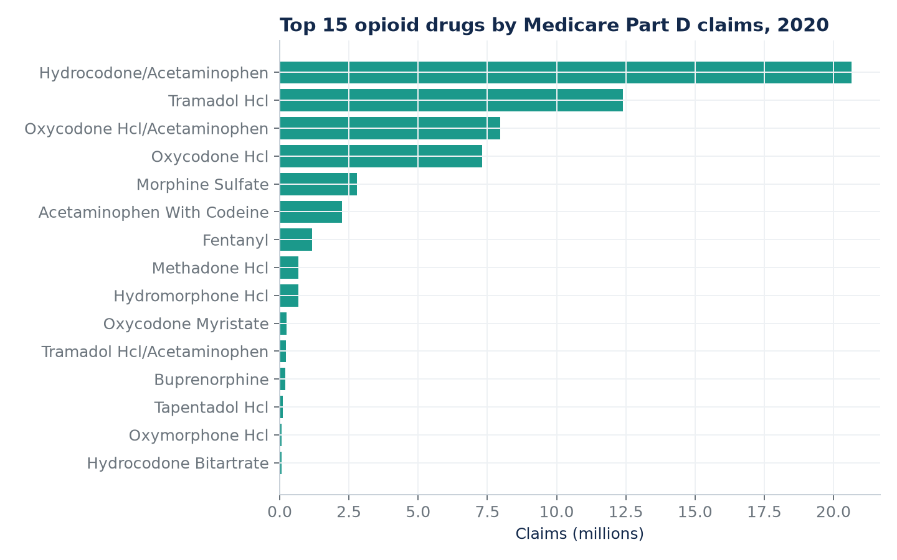
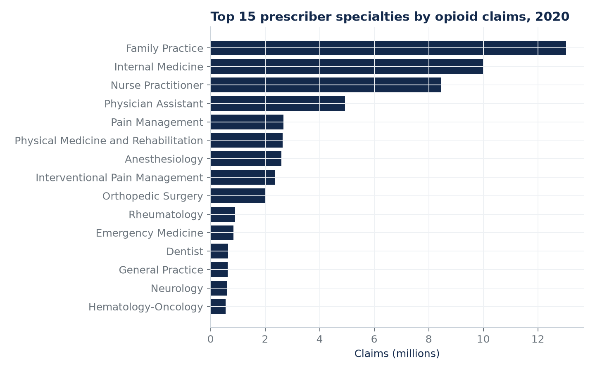
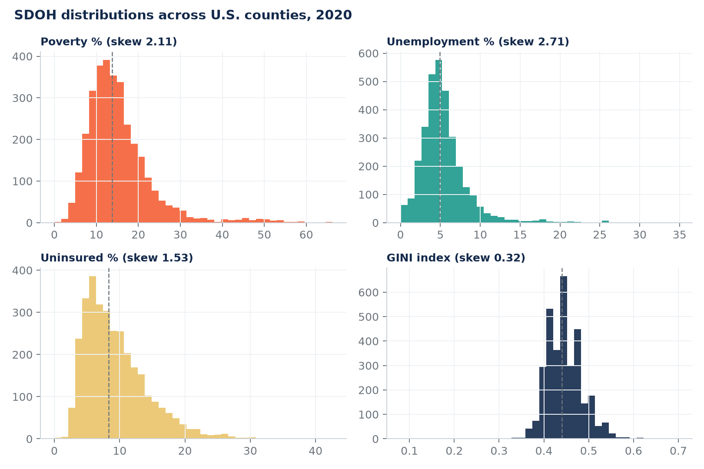
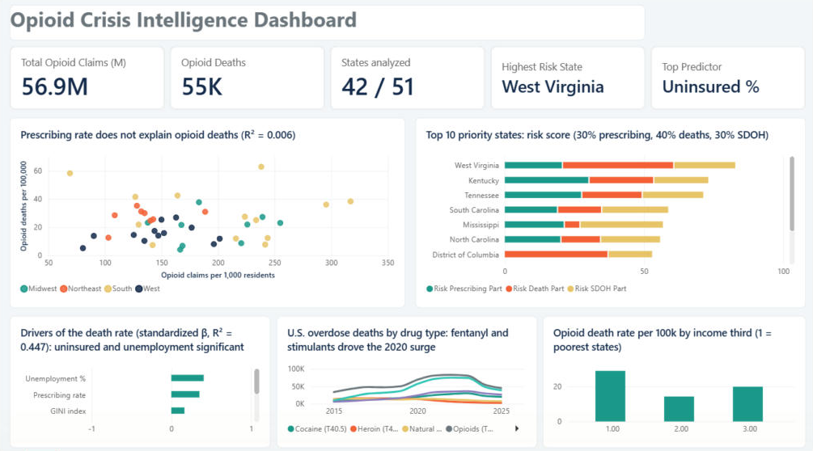

| Author | Yajuvendra Dhadhal |
| Programme | M.Sc. International Information Systems, FAU Erlangen-Nürnberg |
| Stack | PostgreSQL · Python (pandas, statsmodels, scipy, scikit-learn) · Power BI · GitHub Actions |
| Code and data | github.com/YajuvendraDhadhal/opioid-crisis-dashboard |
| Date | November 2026 |
A state health department wants to know where to send opioid intervention resources. A common assumption is that states which prescribe more opioids also have more opioid deaths. This project tests that assumption with three public federal datasets for 2020 and builds a risk ranking of states.
Which U.S. states show the strongest link between opioid prescribing and overdose mortality, and which socioeconomic factors amplify or buffer it, so that a state health department can prioritise intervention resources?
| Dataset | Source | Level | Used for |
|---|---|---|---|
| Medicare Part D Prescribers by Provider and Drug, 2020 | CMS | Provider × drug, 25,209,729 rows | Opioid claims by state, drug and specialty |
| Medicare Part D Prescribers by Geography and Drug, 2020 | CMS | State × drug | Official opioid drug flag |
| VSRR Provisional Drug Overdose Death Counts | CDC NCHS | State × month × drug indicator | Opioid deaths, 12 months ending Dec 2020; U.S. trend by drug type |
| Community-Level Health (SDOH) Database, 2020 | AHRQ | County, 3,234 rows | Population, poverty, unemployment, uninsured, GINI, income |
2020 is the most recent year in which all three sources overlap, so the design is a single-year comparison of states. Rates use the AHRQ county population, summed to state level.
| Step | What was done |
|---|---|
| Opioid definition | A drug counts as an opioid if most of its rows in the CMS Geography × Drug file have Opioid_Drug_Flag = Y (30 generic names) |
| State SDOH values | County values weighted by county population (SQL) |
| Rates | Opioid claims per 1,000 residents; opioid deaths per 100,000 residents |
| Correlation | Spearman, because the SDOH variables are right-skewed |
| Regression | OLS on standardized variables (comparable β), with VIF checks; gradient boosting as a non-linear cross-check |
| Risk score | 30% prescribing + 40% death rate + 30% SDOH vulnerability, each scaled 0 to 100 |

Figure 1. Each dot is a state (size = population). The trend line is almost flat.
States that prescribe more opioids to Medicare patients do not have higher opioid death rates. Kentucky and Tennessee prescribe the most and have high death rates. But West Virginia has a much higher death rate than Kentucky at lower prescribing, DC has one of the highest death rates at the lowest prescribing rate, and Mississippi and Oklahoma prescribe almost as much as West Virginia with far lower death rates.

Figure 2. Standardized coefficients; coral = significant (p < 0.05).
| Variable | β | p | VIF |
|---|---|---|---|
| Uninsured % | -0.50 | 0.002 | 1.4 |
| Unemployment % | +0.41 | 0.045 | 2.4 |
| Prescribing rate | +0.35 | 0.097 | 2.7 |
| GINI index | +0.16 | 0.439 | 2.8 |
| Median income | +0.09 | 0.794 | 6.7 |
| Poverty % | -0.08 | 0.809 | 7.6 |
R² = 0.447, adjusted 0.352, F-test p = 0.001, n = 42. Poverty and income are strongly correlated (VIF 7.6 and 6.7), so their separate effects are not reliable.

| Rank | State | Risk score | Deaths / 100k | Claims / 1k | SDOH score |
|---|---|---|---|---|---|
| 1 | West Virginia | 82.8 | 62.9 | 238 | 74 |
| 2 | Kentucky | 73.1 | 38.3 | 317 | 66 |
| 3 | Tennessee | 71.3 | 36.1 | 296 | 74 |
| 4 | South Carolina | 58.7 | 27.4 | 224 | 80 |
| 5 | Mississippi | 56.8 | 12.4 | 244 | 100 |
| 6 | North Carolina | 55.8 | 25.1 | 234 | 72 |
| 7 | District of Columbia | 52.9 | 58.3 | 69 | 54 |
| 8 | Ohio | 51.8 | 37.7 | 183 | 51 |
| 9 | New Mexico | 51.0 | 25.4 | 150 | 89 |
| 10 | Missouri | 50.5 | 23.0 | 255 | 51 |
Seven of the ten are in the South. The District of Columbia ranks seventh with one of the lowest prescribing rates, because of its very high death rate (58.3 per 100,000), which shows why the death rate gets the largest weight.

| U.S. deaths, 12 months ending December | Change 2019 to 2020 |
|---|---|
| Synthetic opioids excl. methadone (mainly fentanyl) | +55.4% |
| Psychostimulants (mainly methamphetamine) | +47.7% |
| All opioids | +37.6% |
| All drug overdose deaths | +30.0% |
| Cocaine | +22.3% |
| Natural and semi-synthetic opioids (prescription type) | +13.2% |
| Heroin | −6.1% |
The fastest growth was in illicit fentanyl and stimulants, not in prescription-type opioids. This helps explain why the prescribing rate is a weak predictor of deaths by 2020.


Hydrocodone/acetaminophen (20.7M claims) and tramadol (12.4M) lead Medicare opioid prescribing. Family Practice (13.0M claims), Internal Medicine (10.0M) and Nurse Practitioners (8.4M) write the most opioid prescriptions. Pain Management has only 2,183 prescribers, but about 1,220 claims each, roughly six times the Family Practice average.

Figure. All four SDOH variables are right-skewed, with a long tail of disadvantaged counties. This is why Spearman correlation is used.

One page, built in Power BI Desktop from the pipeline's star-schema tables (file: powerbi/opioid_dashboard.pbix).
| Element | Content |
|---|---|
| 5 KPI cards | Opioid claims, opioid deaths, states analysed, highest-risk state, strongest predictor (DAX measures) |
| Scatter plot | Prescribing rate vs death rate by state, coloured by region |
| Stacked bar | Top 10 states with the three parts of the risk score (Top N filter) |
| Bar chart | Standardized regression coefficients |
| Line chart | U.S. deaths by drug type, 2015 to 2025 |
| Column chart | Death rate by income third of states |
The semantic model (7 tables, 1 relationship, 17 measures) is stored as a TMDL script (powerbi/model.tmdl) so it can be recreated in any Power BI Desktop with one paste.
| Problem | What I did |
|---|---|
| Inconsistent CMS opioid flag | Topiramate, an anti-seizure drug, appeared among the top opioids because 2 of its 11 rows are flagged as opioid. A drug now counts only if most of its rows are flagged. Buprenorphine HCl, mainly used to treat addiction, dropped out too. Claims went from 60.0M to 56.9M. |
| Numbers differ from my first version | My April 2026 version (code lost) reported R² = 0.043, 41 states, 58.8M claims and 11,680 deaths. This rebuild is fully reproducible from the raw files and finds R² = 0.006, 42 states, 56.9M claims and 54,781 deaths. The main conclusion is unchanged. |
| AHRQ download blocked | The server refused downloads without a browser user agent, and the file has moved to the new Community-Level Health Database. Fixed in download.py. |
| Map visuals disabled | Power BI's map visuals were switched off in the local security options, so the risk map slot shows the income comparison instead. |